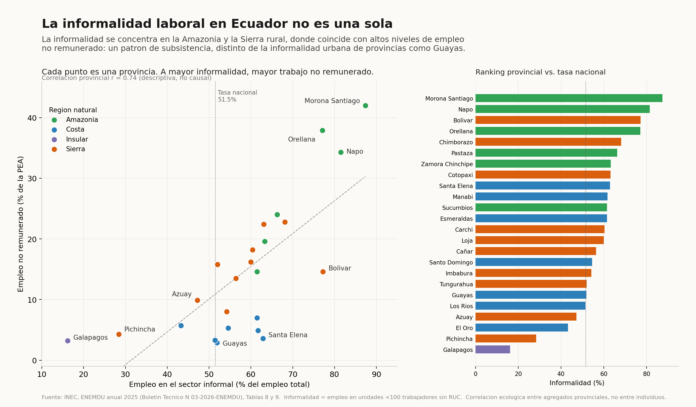
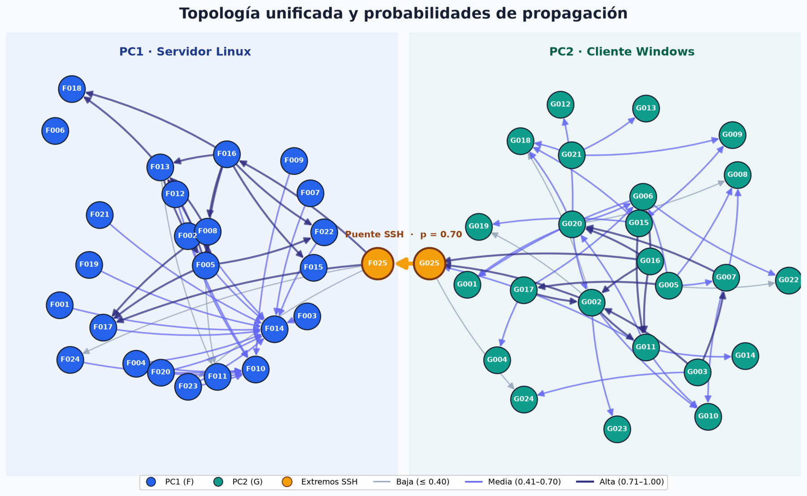
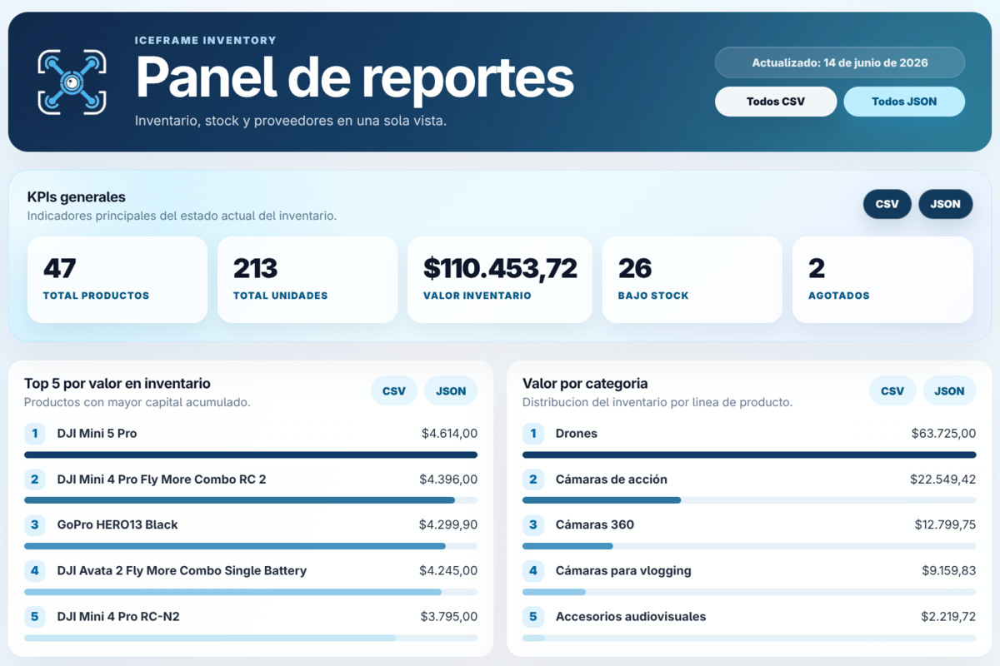
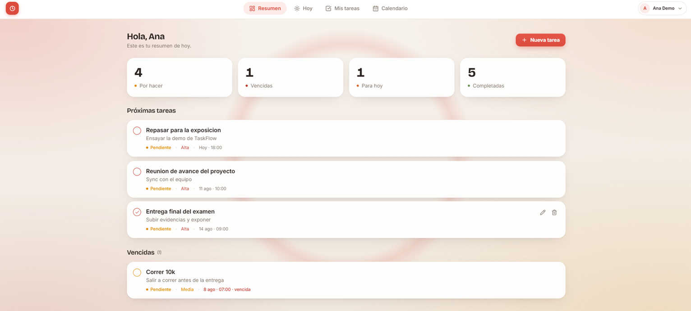
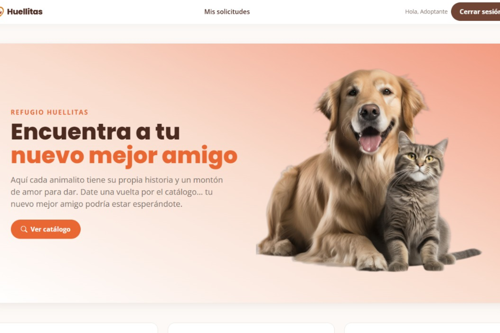
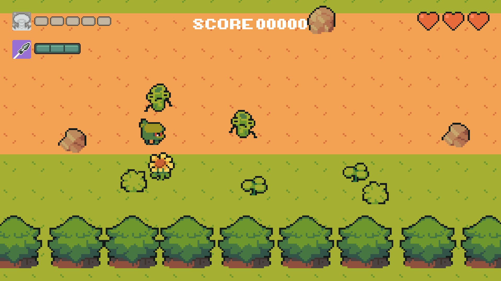

Software
Lógica ordenada, datos bien modelados e interfaces que resuelven algo concreto.
Me enfoco en
Estudiante de computación. Construyo aplicaciones, analizo datos y me interesa la infraestructura que los sostiene.
Estudio Ingeniería en Ciencias de la Computación y convierto lo que aprendo en aplicaciones de escritorio y web, bases de datos, procesos ETL y servicios distribuidos.
Me interesa comprender cómo se conectan las distintas partes de un sistema y abordar cada problema desde más de una perspectiva. Cada proyecto me permite fortalecer mi criterio técnico y construir soluciones con mayor intención.
Lógica ordenada, datos bien modelados e interfaces que resuelven algo concreto.
Linux, contenedores, redes privadas y despliegue: la capa que mantiene todo en pie.
Mantenimiento de equipos y preparación de máquinas para una arquitectura de clúster.
Proyectos documentados en GitHub
Materias representadas
Hackathones SpaceHACK 2025 y 2026
Ganadores Ecuador Quantificado 2026
Tecnologías y herramientas que he aplicado en proyectos de software, datos e infraestructura.
Atrium, Blackboard, Agenda, Huellitas, Enreach, TaskFlow y The Tale of Wong.
Enreach (Data Warehouse), Atrium, informalidad laboral en Ecuador.
IceFrame, TaskFlow, mantenimiento de equipos y preparación de un clúster universitario.
Marcadas: las que uso con más frecuencia.
Proyectos académicos y trabajos independientes, cada uno con su repositorio abierto.

Ganador seleccionadoAnálisis reproducible de la informalidad y el empleo no remunerado por provincia con datos de la ENEMDU 2025. Automatiza extracción, validación y visualización.
Una de las ocho propuestas ganadoras de Ecuador Quantificado 2026.

Análisis de AlgoritmosComparación de Dijkstra y Bellman-Ford adaptados para maximizar el producto de probabilidades sobre un grafo dirigido de 50 nodos y 86 aristas que modela la propagación entre un servidor Linux y un cliente Windows unidos por un puente SSH.
Mide tiempo, pico de memoria y estabilidad en 800 registros consolidados, y anima las rutas obtenidas desde una interfaz por terminal o una GUI en Tkinter.

Sistemas DistribuidosInventario distribuido de productos audiovisuales: PostgreSQL en Docker con volumen persistente, red privada por Tailscale y un servicio aparte de reportes con exportación CSV/JSON.

Sistemas DistribuidosGestor de tareas distribuido entre dos máquinas y dos clústeres Kubernetes independientes, comunicados por Tailscale, con autenticación JWT, CRUD completo y calendario.

Lenguajes de ProgramaciónPlataforma web de adopción de mascotas en Laravel: catálogo, solicitudes, evaluación administrativa, citas y formalización del acta de adopción sobre MariaDB.

Lenguajes de ProgramaciónJuego de acción 2D top-down en pixel art con dos niveles, salas de combate, enemigos aleatorios, tres armas, coleccionables, jefe final y marcador de puntuaciones.
 Base de Datos 2
Base de Datos 2
Data Warehouse y plataforma BI para telecomunicaciones: ETL, modelo dimensional en PostgreSQL, API en Spring Boot y dashboards en React para facturación, cobranza y consumo.
 Estructura de Datos
Estructura de Datos
Sistema académico en Java para calificaciones, actividades, entregas y reportes, implementando estructuras de datos propias en lugar de las colecciones estándar.
 Estructura de Datos
Estructura de Datos
Agenda en Java y JavaFX con búsqueda por prefijo y priorización de contactos, resuelta con un árbol de prefijos y un heap propios, más importación y exportación en CSV.
 Base de Datos 1
Base de Datos 1
Aplicación de escritorio en JavaFX para gestionar eventos, emprendimientos y mentorías, con carga desde Excel, persistencia en PostgreSQL y reportes analíticos en PDF.
Credenciales que complementan la formación académica.

Ingeniería de datos sobre AWS: construcción de pipelines, procesos ETL, almacenamiento y consulta con servicios como Glue, Athena y EMR.
Arquitectura de soluciones en AWS: diseño de infraestructura cloud aplicando buenas prácticas, servicios de AWS y fundamentos del AWS Well-Architected Framework.
Participaciones en dos ediciones de SpaceHACK for Sustainability, con datos satelitales y análisis geoespacial.
 2025
2025
Track: Environmental Migration in Sahelian Africa
Propuesta contra la desertificación basada en análisis geoespacial en Google Earth Engine, mapas NDVI y estructuras biomiméticas de captación de humedad.
 2026
2026
Track: Climate Change and the Alpine Information Battle
Plataforma de verificación climática que contrasta noticias sospechosas con datos satelitales y evidencia científica sobre el retroceso glaciar en los Alpes.
Resumen de formación y experiencia práctica.
Escríbeme o revisa mi código.